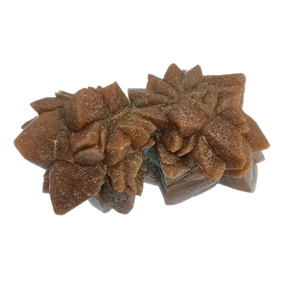

Mineral Grimoire
 Glendonite
Glendonite
Appearance
Light to mid greyish-brown color with many knobbly points on opaque sphere.
Origin
Russia. Rare mineral.
Attributes
This stone of guidance and spiritual purpose helps you discover your soul intention for the present life. Meditate with it to check that you are following your present intention rather than an outmoded one that has become 'stuck' in your energy field. Glendonite de-energizes the old pattern and helps you to access a more beneficial intention for your spiritual evolution.
Activating all the chakras especially those at the higher level, Glendonite facilitates learning. It allows information to move freely through the body and facilitates rapidly processing thoughts and insights. Placed over the third eye, it transfers psychic downloads and opens clairvoyance and inner vision. Glendonite helps you to simplify your thought processes and speeds up information assimilation so that the most complex subject becomes easily understandable.
A useful stone for transmuting emotional patterns that no longer serve, Glendonite creates a loving environment and overcomes a dysfunctional family background to create a loving, supportive family life. With this stone, you live life as you are now rather than as a product of the past. It is a stone of personal learning and discovery, and assists in reuniting with your soul family.
Healing
Glendonite is reputed to ameliorate insomnia and headaches, especially where these have an emotional cause. Said to facilitate healing of broken bones, cuts and abrasions, it is also thought to strengthen teeth and bones and to assist cell regeneration.
Position
Place, grid or position as appropriate or disperse gem essence around the aura. NOTE: Make gem essence by the indirect method.